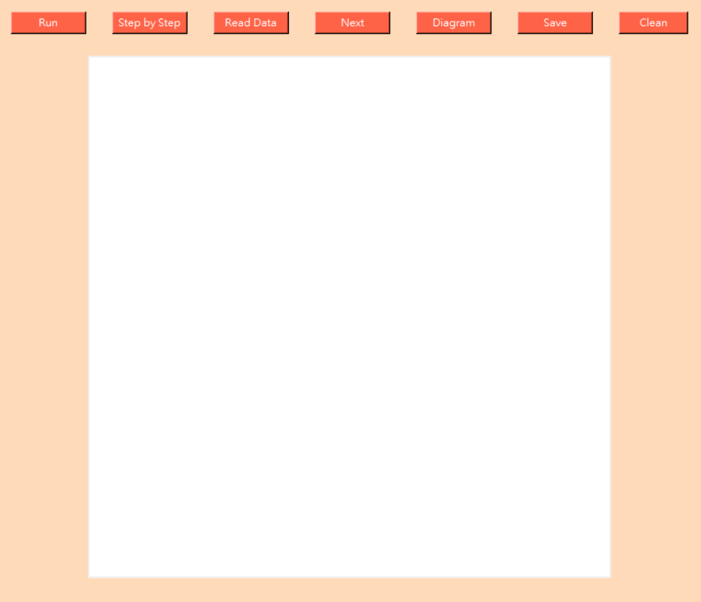
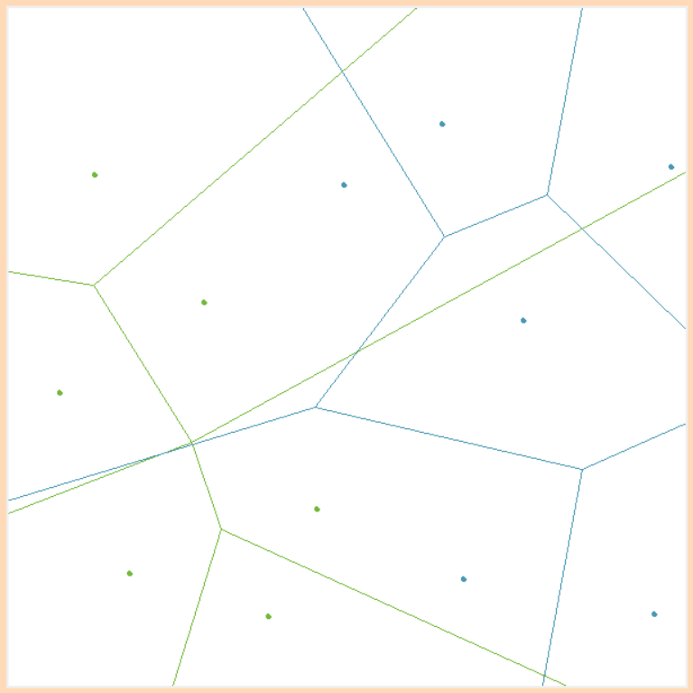
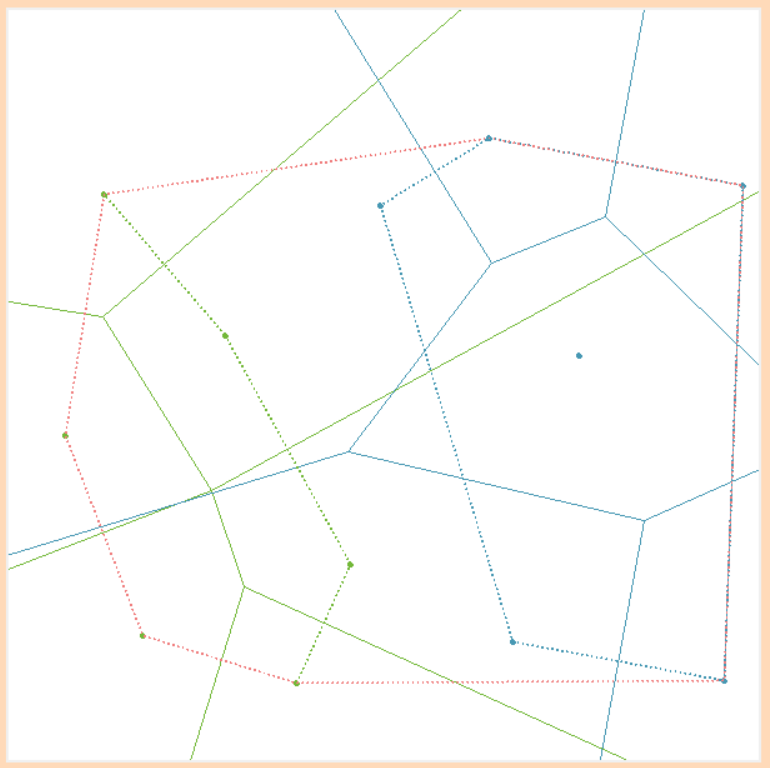
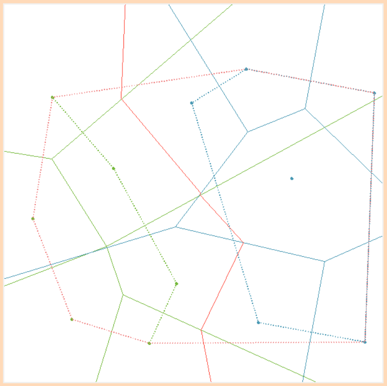
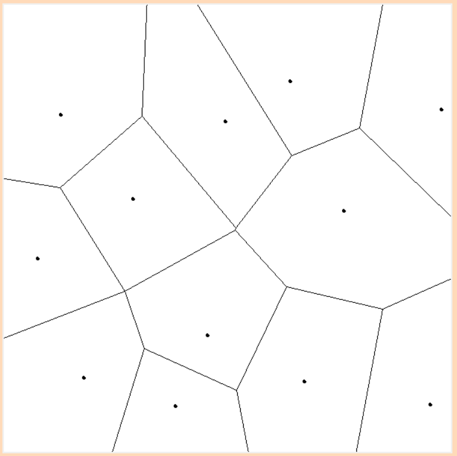
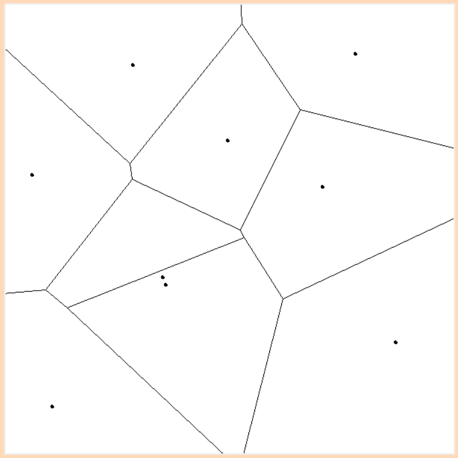
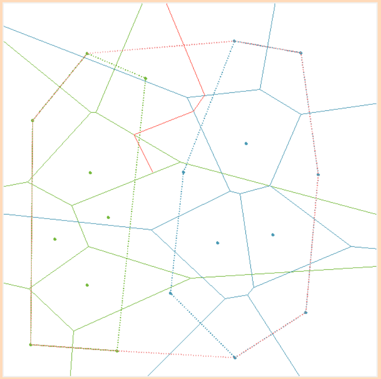

資訊工程學系碩士班一年級 M113040037 吳宥璇
✱ 軟體規格
- Input
- 滑鼠直接在畫面上任意點取
- 讀入文字檔
- Output
# P 紀錄點的座標 x1 y1 # E 紀錄線的座標 x1 y1 x2 y2 P 102 163 P 200 478 P 527 269 E 0 367 299 273 E 299 273 368 0 E 299 273 508 600 - 軟體介面
直接畫出 Voronoi Diagram 依照 Divide and Conquer 的步驟畫 Voronoi Diagram，按"Run"可直接跳到最終完成畫面 讀取 Input data 需先使用"Read Data"打開 Input data，"Next" 可讀取下一組測資 讀取 Output 出來的檔案，並畫出該 Voronoi Diagram 儲存完成的 Voronoi Diagram 清除畫面及資料
- 軟體安裝
至附錄區下載執行檔，下載完成後即可直接打開程式
#檔案中「#」為註解或說明文字，不影響讀取檔案
#格式範例(以兩個點為例):
2
x1 y1
x2 y2
✱ 程式設計
- Data Structure
# 用 class 紀錄 Diagram 資料，每個 Voronoi Diagram 為一個 object
class VD():
def __init__(self, origin_point):
self.p_quantity = len(origin_point) # 點的數量
self.point = origin_point # 點的座標
self.vertex = [ ] # Voronoi Diagram 的點
self.edge = [ ] # Voronoi Diagram 的邊
self.convexhull = [ ] # Convex Hull
self.upper_line = [ ] # 合併前找到的上切線
self.down_line = [ ] # 合併前找到的下切線
self.hyperplane = [ ] # Hyperplane
# public variable:
points = [ ] # 存放所有 point
all_data = [ ] # 存放讀取檔案的每組測資
unread = 0 # 紀錄讀到哪筆測資
step = 0 # 紀錄 divide and conquer 的步驟:
畫左邊的圖->畫右邊的圖->找ConvexHull->找Hyperplane->完成合併
if len(p) < 2 then:
pass # 只有一點不用畫圖
else:
p = SORT(p) # 按照 x 大小由小到大排序所有點座標
VD = CREAT(p) # 畫出 Voronoi Diagram，程式碼在下方
end if
Output VD
if len(p) <= 2 then:
find perpendicular line of p # 若 point 少於等於兩點直接找兩點的中垂線
else:
Left, Right = DIVIDE(p) # 若超過兩點，依照 X 座標平分成左右兩部分
LVD = CREAT(p) # CREAT 左邊的 Voronoi Diagram
RVD = CREAT(p) # CREAT 右邊的 Voronoi Diagram
VD = MERGE(LVD, RVD) # 合併左右兩個 Voronoi Diagram，程式碼在下方
end if
Output VD
利用 Divide and Conquer 不斷遞迴以完成 Voronoi Diagram
def MERGE(LVD, RVD):
new = VD(LVD.point + RVD.point) # 先建立一個新的物件，儲存左右兩邊所有的點
upper tangent, lower tangent, convexhull = MERGE_CH(LVD, RVD) # 找出左右兩個 Convex Hull 的上切線及下切線並合併
hyperplane = FIND_HP # 找左右兩個圖形的 Hyperplane
▲ MERGE_CH function是將左右兩個Convex Hull合併為一個Convex Hull，步驟為:
| 1. | 找左邊Convex Hull最右邊的點及右邊Convex Hull最左邊的點。 |
| 2. | 找上切線的方法為，先固定左邊最右邊的點，進入while迴圈，讓右邊的點依序順時針選取與左邊點形成一條線段，一直到下個點在該線段右邊停止，接著固定右邊最終選取的點，進入另一個while迴圈，讓左邊的點依序逆時針選取與右邊點形成一條線段，一直到下個點在該線段左邊停止，重複上述兩個while迴圈，直到點不再更新為止，即可找到上切線，再用相同方法找尋下切線。 | 3. | 找到上切線及下切線後，從上切線左邊的點往右邊圖型的點開始存取，一直到碰到下切線為止，再接著存取左邊圖形的點，即可確保Convex Hull的點依順時針方向儲存，一直到碰到上切線左邊的點即完成合併Convex Hull。 |
▲ FIND_HP function為找尋左右兩個Voronoi Diagram的Hyperplane，步驟為:
| 1. | 將上切線左邊的點設為A，右邊的點設為B，求中垂線並儲存該中垂線較高的點到Hyperplane的list中。 |
| 2. | 求AB線段的中垂線(起點設為上一個hyperplane的point)，接著檢查左邊圖形的edge是否與該中垂線有交點，儲存最高交點L，再檢查右邊圖形的edge是否與該中垂線有交點，儲存最高交點R，比較L和R的高度，較高者代表中垂線碰到的第一條線，儲存該交點至Hyperplane的list中。 |
| 3. | 若儲存的點為L，則需從左邊圖形的所有點中找尋與L連線後與該edge垂直的點，更新A點；若儲存的點為R，則從右邊圖形找點並更新B的值。 |
| 4. | 重複上述2-3的動作直到步驟2找出的中垂線與左右兩圖形的edge沒有交點，即完成Hyperplane的搜尋。 |
▲ 擦除不要的線段在找尋左右Hyperplane時會一併執行，方法為:
| 儲存Hyperplane point時，檢查edge兩個端點是在Hyperplane上個點與新儲存點形成的線段的右邊還是左邊，若Hyperplane point為碰到左邊edge的交點，則需刪除右邊的點，反之則刪除左邊的點，便可完成Voronoi Diagram的合併。 |
▲ 依照上述方法擦除線段會遇到Hyperplane未碰到的edge未刪除的狀況，故最後加入檢查的機制:
| 完成Hyperplane搜尋後，檢查左邊圖形是否有edge在Hyperplane的右邊，及右邊圖形是否有edge在Hyperplane的左邊， 因Hyperplane為不規則線段，設計檢查機制時花了很多時間嘗試不同方法，最後方式為，檢查左邊圖形edge線段中的左邊point， 若該point的x值>0，另取相同y值與x值為600的點形成一水平線，檢查該水平線與hyperplane是否有交點，若無交點則代表該線段在hyperplane的右邊，右邊圖形也依照同樣邏輯進行檢查， 即可完成多餘線段的刪除。 |
✱ 軟體測試與實驗結果
- 透過"Step By Step" 可以看到 Divide and Conquer 的過程
- 實測正確完成的 Voronoi Diagram 最多20點
- 尚需改進的問題
| Divide ( Left: Green Graph Right: Blue Graph ) |
Find ConvexHull ( dashed line ) |
||
|  |  | ||
| Find Hyperplane ( red line ) |
Finish !! | ||
|  |  |
| 兩點太過相近會出錯 | 因未紀錄中垂線來源的左右兩點，在畫 hyperplane 可能出現找不到點而中途停止的狀況 |
|  |  |
✱ 結論與心得
這是一份需要花時間仔細完成的作業，一開始花了許多時間理解Divide and Conquer的執行過程以及畫出Voronoi Diagram的方法，但再理解觀念之後， 如何實作更是一個艱難的挑戰，過程遇到非常多的問題，而除了Voronoi Diagram本身的難度之外，為了符合作業設置的標準規則，從輸入、輸出 等規格一直到執行呈現的方式都有相關規定，而利用html呈現期末成果也是一個完全不一樣的實作內容，這中間需要思考不一樣性質的問題，對我來說是個很難得的經驗，雖然不容易但也覺得非常有趣。
在寫期中初測的程式碼時，一開始使用外心來畫Voronoi Diagram，在如何擦去不要的線段的問題上思考了非常久，才找到了刪除和三角形邊未相交的線段 的方法，然後進一步實作之後，發現這個方法在遇到直角三角形及鈍角三角形時無法適用，最後變成需要先判斷該三點形成的三角形類型，然後再依照銳角、直角、鈍角三種三角形做不一樣的 計算，最後才解決了這個問題，使用這個方法寫出來的程式碼需檢查非常多條件，像在判斷直角及鈍角三角形之後，是在基於原本銳角三角形找到的點跟線再去做檢查及修正，過程非常的 繁瑣，但當時沒有任何想法可以去改善這些程式碼，直到開始解決三點以上的問題時，才真正理解了用Divide and Conquer解Voronoi Diagram正確的執行方法，直接刪除了期 中寫的function，雖然有點期中做白工的感覺，但也讓我深刻體會到了演算法的重要性，有太多的方法可以用來解同一個問題，能解決問題不一定代表這個問題就結束了， 如何找到一個好的解決方法更是一件重要的事。
從圖形理解轉換到程式實作是個非常不容易的事，其實一開始光是要讓點與線在程式中正確執行就讓我苦惱了非常久，沒想到後續還能解決這麼多問題，當然除了三角形的問題之外，期末時在合併 Convex Hull 和找 Hyperplane 這兩個問題時也花費了非常多心力在思考如何解決，每個階段的任務如何相互配合則又是另一個困難，在解決問題的過程中，好幾次修正了一個問題之後，會換其他狀況出問題，好像越改問題就越多，很容易會突然不知道應該從何改起， ，這時才發現，Step by Step的機制能夠有效地幫助我檢查每一個執行的過程，進而找到了隱藏在不同階段的問題，並在自己能力範圍內解決這些問題，雖然最後完成的程式還有優化的空間，希望自己能繼續努力寫程式，累積更多經驗，將程式改得更好、更完整。
✱ 附錄
| 執行檔 | 測試輸入檔 | 測試輸出檔 | 程式原始碼 | 參考網站 | Icon出處 | |
 |